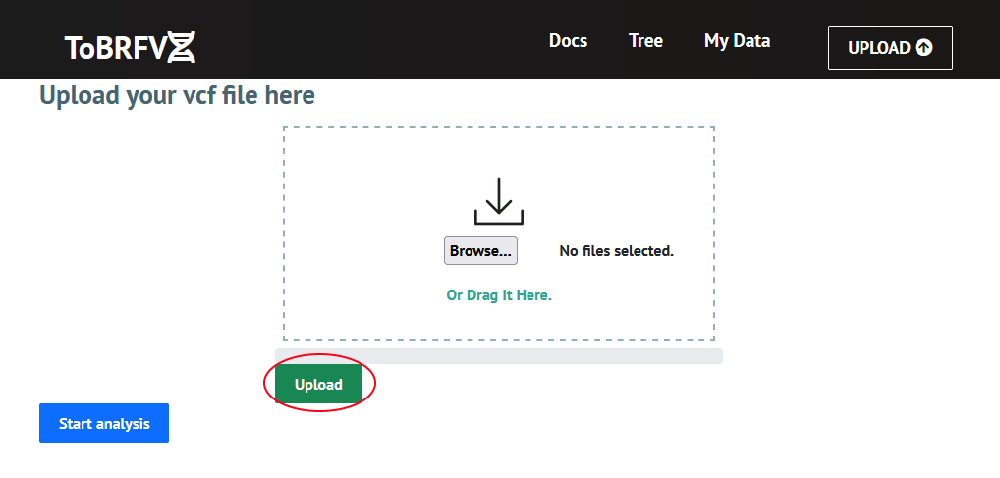
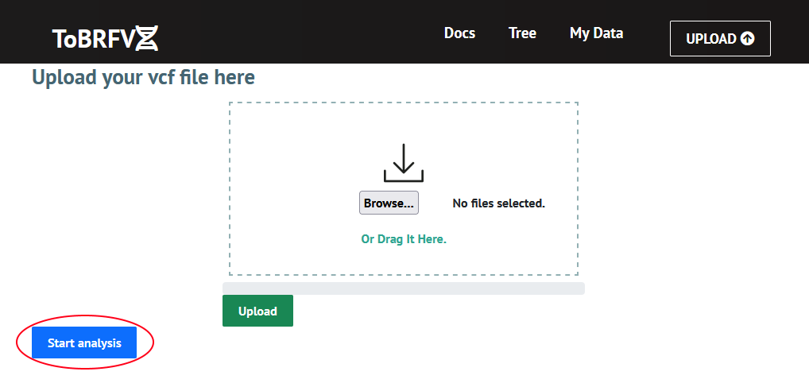
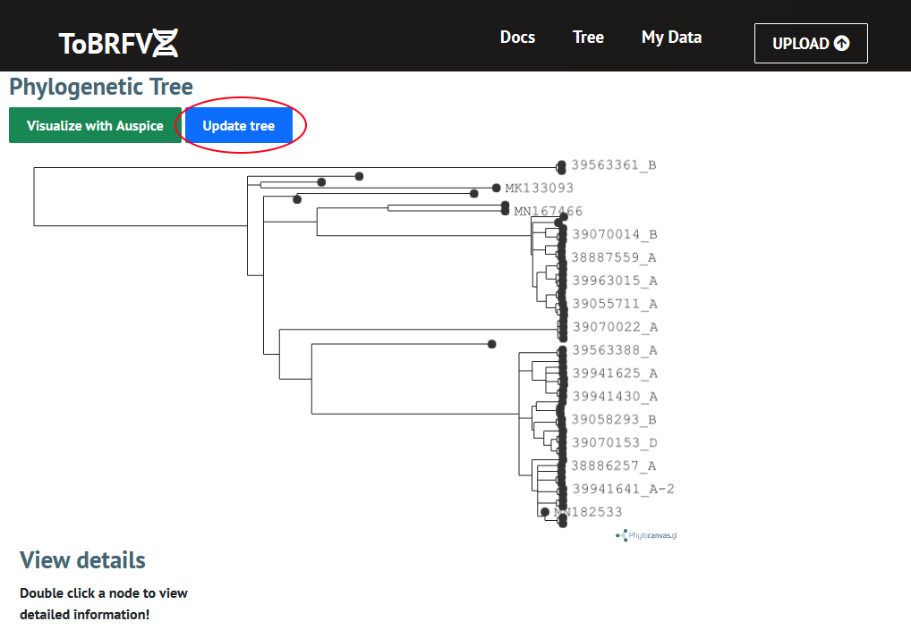
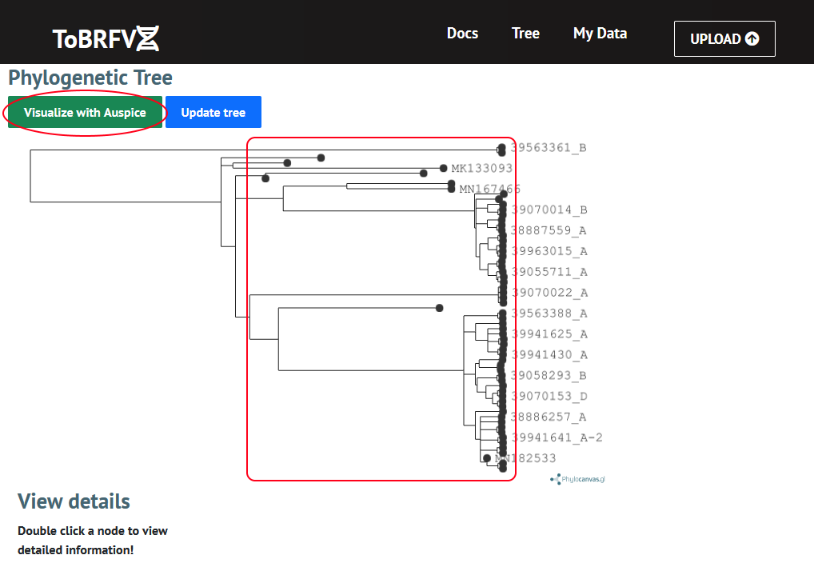
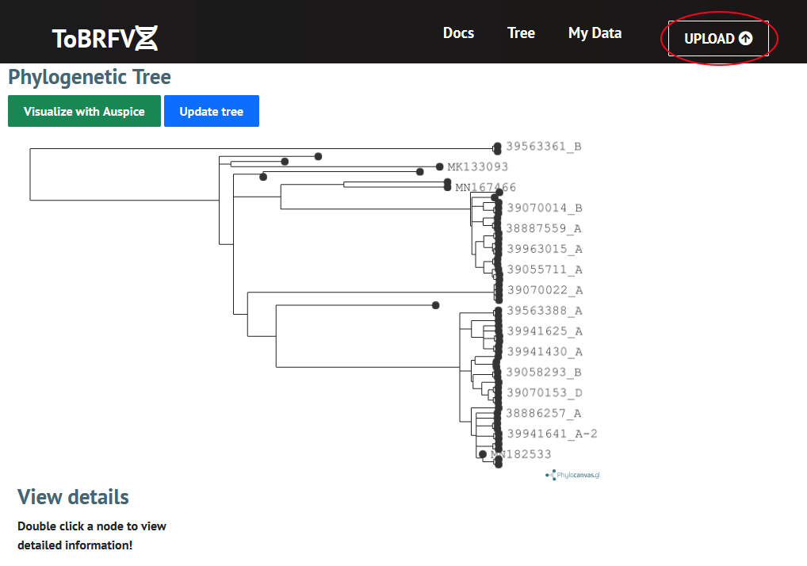

Welcome to ToBRFV-Lineages!
To assign and visualize the lineage for a given genom of the Tomato Brown Rugose Fruit Virus (ToBRFV), follow these steps:
1) Upload your file
Upload the DNA sequence in a 'vcf' file by either dragging and dropping the file into the window or by browsing for a file, then click 'Upload'

2) Start analysis
Once the file has successfully uploaded, click the 'Start analysis' button

3) Update the tree
Once analysis is complete, go to the tree page and click 'Update tree'

4) Review the results
Double click on a node of the phylogenetic tree for more information. An interactive visualization of the phylogenomic data can be launched by clicking 'Visualize with Auspice'.

5) Upload more files
You can upload more files by going back to the upload page
